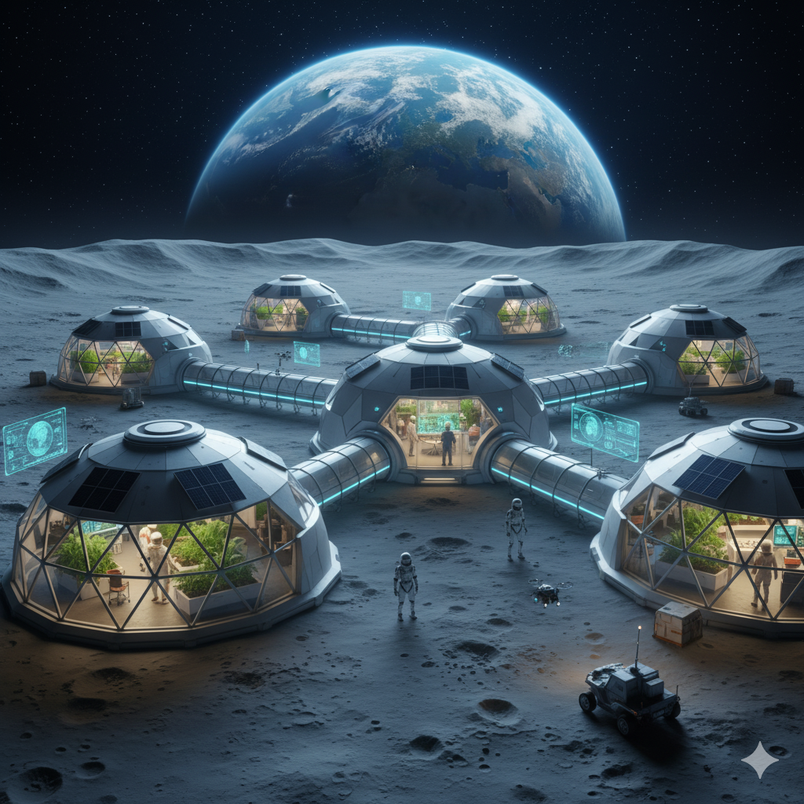

MoonMinder Systems was founded in 2112 to make life on lunar bases more connected, supportive, and enjoyable. Our companions aren’t just machines—they’re adaptive partners, designed with cutting-edge robotics, advanced neural processors, and the latest Large Language Models. Each unit comes pre-trained for mission-critical tasks, from habitat maintenance to research assistance, while also learning from your habits to provide personalized support. Whether you need a dependable technician, a loyal assistant, or simply a friendly presence under the stars, MoonMinder robots evolve with you—bringing humanity and innovation together on the Moon.
Our robotic crew is always on standby—ready to tackle technical challenges, optimize your lunar routines, and maybe even crack a joke or two. Whether it’s debugging your habitat systems, analyzing moon dust samples, or brewing the perfect cup of coffee for your lunar morning, these companions are designed to make life on the Moon smarter, smoother, and a little more fun. Meet the team behind the circuits:
Expert in lunar software and AI routines. Loves optimizing algorithms and telling binary jokes.
Guides lunar expeditions with pinpoint precision, mapping craters and tunnels effortlessly.
Keeps all mechanical systems running smoothly, talking to screws and circuits along the way.
Life on the Moon was once a dream relegated to textbooks and sci-fi novels. By the late 21st century, advances in propulsion, habitat engineering, and artificial intelligence made sustained lunar living a reality. Early lunar outposts began as research stations, but as private companies and international coalitions expanded operations, permanent settlements emerged — complete with self-sustaining habitats, energy grids, and autonomous support systems.
It was in this era of expansion, in the year 2112, that MoonMinder Systems was founded. Our mission was clear: to create intelligent companions that could assist humans in the unique challenges of lunar life. From monitoring life-support systems to providing companionship in the low-gravity isolation of the Moon, our robots were designed to bridge the gap between cutting-edge technology and the human need for connection.
Over the decades, MoonMinder Systems evolved alongside the colonies. Each generation of companions became smarter, more adaptive, and more personable. Our innovations set the standard for lunar robotics, ensuring that life on the Moon could be both safe and enjoyable. Today, MoonMinder Systems continues to innovate — combining advanced Large Language Models, robotics, and human-centric design to make the Moon feel like home.
Need help, have a question, or just want to chat with one of our bots over a cup of lunar-brewed coffee? We’d love to hear from you!
Email: support@moonminder.systems
Phone: +1-800-MOONBOT
HQ: Mare Tranquillitatis, Lunar Sector 7